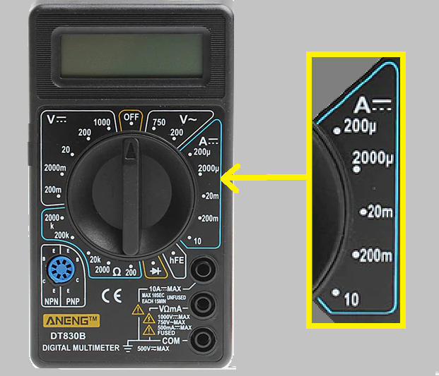

Al igual que todas las unidades de física, la corriente tiene múltiplos y submúltiplos.
En tecnología electrónica, los submúltiplos son los más usados.
Múltiplos
KiloAmper: Es una unidad de medida demasiado grande y muy pocos fenómenos en la naturaleza provocan corrientes de esta magnitud.
Submúltiplos
miliamper: Es la milésima parte de un Amper. Su símbolo es "mA". Matemáticamente 1 mA = 0,001 A.
microamper: Es la milesima parte de un miliAmper, o sea la millonésima parte de un Amper. Su símbolo es "uA". Matemáticamente:
1 uA = 0,001 mA = 0,000 001 A
Existen otros submúltiplos llamados nanoAmper (nA), la milésima parate de un microAmper y picoAmper (pA), la milésima parte de un nanoAmper.
Conversión de unidades
La forma de convertir unidades son las ya vistas:
por razones y proporciones,
por función lineal o
por regla de tres simple (ver clases anteriores).
Conversión de unidades por sistema de ventanas
Se presenta una tabla de conversión con sistema de ventanas, similar al visto para unidades de tensión de generadores.
KiloAmper
Amper (A)
miliAmper (mA)
microAmper (uA)
Submúltiplos en Instrumentos de Medida
Los intrumentos de medida presentan es sus llaves selector, indicadores a fondo de escala en submúltiplos. En la figura se observa en la sección destinada a medidas de corriente, indicaciones en miroAmperes (uA) y miliAmperes (mA)

Escala para medir Intensidad de Corriente Contínua
Práctica
Ser realizarán conversiones de unidades, múltriplos y submúltiplos. La frecuencia de esta operación ocasionará que las conversiones se hagan mentalmente, sin la necesidad de recurrir a lápiz y papel.
Se identificacarán las escalas de medición de los instrumentos que se encuentran en submúltiplos de Amper y se realizará la conversión a Amper.
Evaluación
Aunque la evaluación es contínua, este tema tendrá una instancia de evaluación escrita.
Cuestionario de la Evaluación
¿A cuántos Amperes equivale un KiloAmper?
¿A cuántos Amperes equivalen mil miliamperes?
¿A cuántos miliAmperes equivalen mil microAmperes?
¿A cuántos Amperes equivalen mil microAmperes?
¿A cuántos Amperes equivalen un millón de miliamperes?